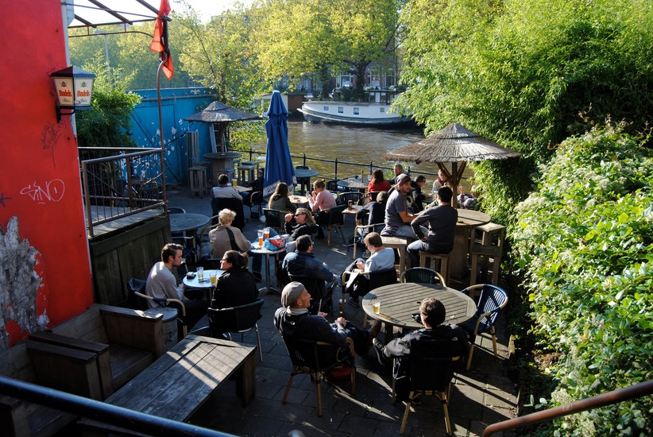

Let's explore whats hiding in plain sight!
As an Amsterdam Local with a love for art, fashion and having a good-ass time,
I present to you; my favorite places to shop, dine, drink and dance!
Hopefully I can bring every side of Amsterdam to you, up close and personal.
Looking for a tasty bite or a good cup of coffee in the early morning? From cozy cafés or trendy
eateries,
there's something for everyone. Taste delicious Dutch dishes like bitterballen and pancakes,
or enjoy international cuisines like Italian, Korean, and more. Don't forget to try the famous Dutch
cheese!
And the best part is that many of these places have a great atmosphere and often offer beautiful views
of the canals. So, come on over and discover the culinary treasures of Amsterdam!

Are u on the hunt for a spot to have a drink with friends or to enjoy dancing to some music?
While exploring each side of Amsterdam you will find streets filled with a variety of bars and clubs
to suit every taste.I will bring u along to some popular spots among locals and more hidden gems.
Get ready to dance the night away and have an unforgettable time!

The city is known for its diverse shopping options, from large department stores to boutiques and
markets.
Visit the famous Kalverstraat for a wide range of shops, including popular brands and international
chains.
If you're looking for unique and trendy items, head to the Negen Straatjes (Nine Streets),
where you'll find vintage shops, boutiques, and concept stores. Don't forget to visit the Albert Cuyp
Market,
a lively market with fresh produce, clothing, and souvenirs. Many shops are open from Monday to
Saturday,
but keep in mind that some smaller shops may be closed on Sundays.